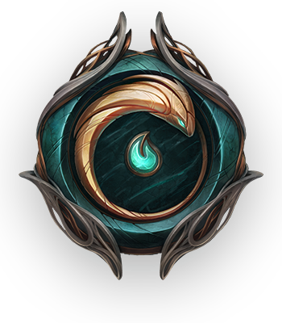
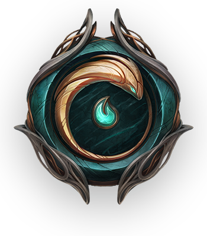

Yasuo, el imperdonable
Nacido en la región de Jonia, Yasuo era un talentoso espadachín que destacaba en el uso de la técnica del viento. A pesar de su habilidad, fue acusado falsamente de asesinar a su maestro, quien murió durante la invasión de Noxus. Debido a esta acusación, Yasuo fue exiliado de su aldea y perseguido por su propio hermano, Yone. En su travesía como fugitivo, Yasuo descubrió que no fue él quien mató a su maestro, pero su redención quedó incompleta al tener que enfrentarse y matar a su hermano en combate. Desde entonces, vive con la culpa y busca su lugar en el mundo, llevando una vida solitaria, siempre en busca de paz, pero incapaz de escapar de su tormentoso pasado. Su historia está marcada por la tragedia, la culpa y la búsqueda de redención.
 
